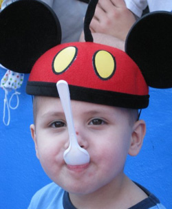

2009
Adam, the third wish-child sponsored by Distance 4 Dreams, is a four-year-old boy who loves Lightning McQueen, the color orange, spaghetti, and anything with an engine or wheels. Additionally, he shares a captivating smile, incredible strength, and even more heart.
Distance 4 Dreams members had the chance to get to know Adam and his family throughout fundraising and training in the fall semester. In Florida, D4D members shared an exciting dinner in Epcot with the Hall family Friday night of marathon weekend and an ice cream party at Give Kids the World Village on Saturday.
"I am forever grateful to Distance 4 Dreams," said their father Matt. "They made this possible, and extra special and all about my kids. It makes me want to cry it means that much."